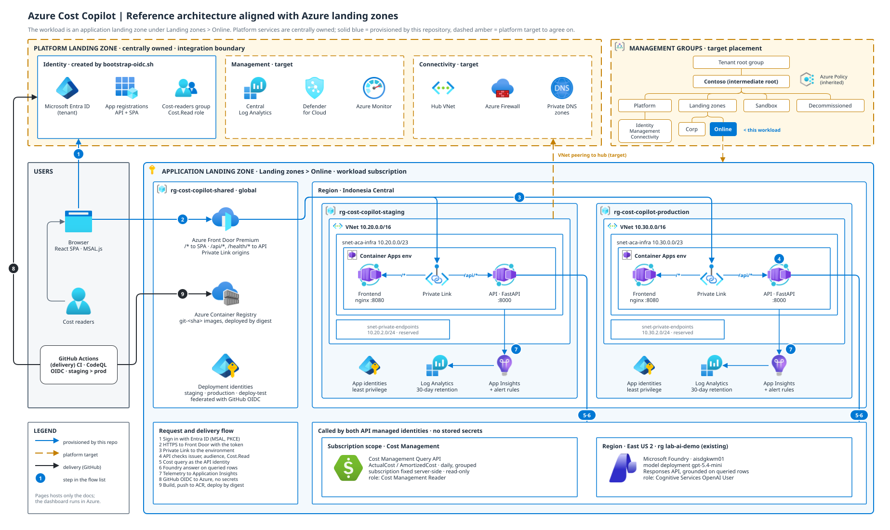

Access boundary: This page is static documentation. Cost figures and chat
are not hosted here. The dashboard opens at its existing address and requires authorized
Microsoft Entra sign-in. Do not publish screenshots or live cost data on a public site.
Installation guide
Install from Azure Cloud Shell: Entra ID, OIDC, infrastructure, configuration, first deployment.
Install itDeveloper guide
Trace authentication, cost queries, chat grounding, releases and operations.
Read the guideArchitecture diagram
Landing-zone-aligned SVG with Azure service icons; opens editable in draw.io.
Open the SVG
Cost dashboard
Open the existing hosted application. Sign-in and permissions still apply.
Open dashboardArchitecture
The workload is an application landing zone under Landing zones › Online. Solid blue resources are provisioned by this repository; dashed amber services belong to the platform landing zone and must be agreed with the platform team.
